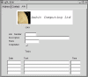

|
|
|
Aubit 4GL project is a OpenSource project to make free, GNU/GPL, Informix-4GL and x4GL compatible development tools (compiler, tools, libraries), and continue to extend functionality and tools needed to write most efficient, stabile and productive applications in business related, database oriented applications. |
 |
|
Aubit 4GL compiler is software that translates x4GL programming language into executable programs, enabling fast and productive creation of database oriented applications utilizing 4GL with embedded SQL and C programming languages, using ODBC and native connections to databases, and GTK+ for GUI, or Ncurses for CUI, and HTML/JavaScript for web browser presentation layers. |
One of crucial prerequisites to enter corporate IT space, for any platform, is availability of business oriented applications. They depend on availability of commercial grade databases, and programming tools needed to develop business oriented, database applications.
OpenSource software in general made a big progress in that direction, but OpenSource tools required to write this kind of applications productively, are still in short supply. In traditional corporate IT space, Fourth Generation Languages are important part of IT structure, and low-level programming languages, including Third Generation Languages like C or Java, are still a long way from productivity and maintainability required for daily changing business need. But there are very few, if any, OpenSource Fourth Generation Languages available. Aubit 4gl compiler project is an attempt to fill this gap.
Aubit 4gl project is much more then just about developing Aubit 4gl compiler. Today, Aubit 4gl project hosts and develops several x4gl related tools, that can be useful to 4gl developers, even if they don't use Aubit 4gl compiler:
LIB4GL (Power-4gl) cross-compiler library of general 4gl code functions.
FGLDOC tool for automatically documenting 4gl applications code.
FGLGEN and FGLBLD 4gl application generators/CASE tools.
Cross-compiler x4GL language reference documentation.
AMAKE Cross-compiler make tools for compiling x4gl applications with any x4GL compatible compiler
Number of x4GL utilities usable with any x4gl compatible compiler (adbaccess, IDE, adbload, HTMLlib, JabberLib...)
GWD::4GL development environment scripts for use with GWD programmers text editor.
Our ultimate goal is to provide compiler, tools, documentation, code libraries, and complete 4GL applications available to x4GL developers under OpenSource development model, and GNU/GPL license. If you are developer using ANY x4GL compiler, Aubit 4gl project is a place to be.
OpenSource / 4GL (Fourth Generation Language) / Aubit project PRESENTATIONS
Aubit 4gl project FAQ page, with all answers you need about Aubit 4gl project.
Aubit 4gl project home page (includes access to all project resources, CVS, download, discussion list, etc.)
Aubit 4gl on-line documentation (Manuals, Language Reference, and more.)
Aubit Computing Ltd - provider of commercial support for Aubit 4gl.
For developers: Aubit 4gl nightly builds (backup on old site) Note: typically, users should see "released files" instead, because nightly automatic builds contain untested code
See GUI for Aubit 4GL in action
See Aubit 4gl application running in your web browser (backup)
4GL Applications Repository, hosting a number of OpenSource applications written in x4GL programming language (ERP, accounting, CRM, POS, etc...)
See Aubit4gl project home page for details:
John H. Frantz donated Power-4gl to Aubit 4gl project
Sergio Ferreira donated fgldoccumenter tool to Aubit 4gl project
Aubit 4gl logo now official. Please use it.
Jonathan Leffler donated FGLGEN and FGLBLD to Aubit 4gl project
Aubit 4gl compiler can now generate Perl code
Aubit 4gl compiler now have DoxyGen documentation
Aubit 4gl compiler now loads database support dynamically
Aubit 4gl run-time for Windows available
Demo of Jabber/IM/Middleware support for Aubit 4gl compiler available
22/10/2001: Windows port now in sync with Linux version - up to V 0.20
21/10/2001: Aubit 4gl have new unofficial logo
20/10/2001: On-line demo of Aubit 4gl HTML mode available
13/10/2001: No ODBC dependencies builds available
29/09/2001: New documentation errata and supplements posted
28/09/2001: Mailing list migrated from Yahoo groups to SourceForge
28/09/2001: Release 0.20 with 9 binary builds available on "released file" page.
16/09/2001: Aubit 4gl successfully compiled CSI's Maximise ERP applications
31/07/2001: Help wanted!
01/09/2001: David Prieto, author of Hy4gl, joined Aubit 4gl development team
Main place for communication about Aubit 4GL is mailing list, but if you need to, you can get more information from:
Mike Aubury, technical questions about compiler, and
Andrej Falout, development process, web site, documentation and general Aubit 4gl project issues
To have OpenSource, GNU/GPL 4gl compiler is great, but compiler will not make programs by itself. So why not add few 4GL applications and 4gl code libraries to this project?
I will be adding my POS app soon, as first in line.
Let us know if you have some 4gl code that you would like to see under GNU/GPL in our project.
Aubit 4gl project is hosted by: